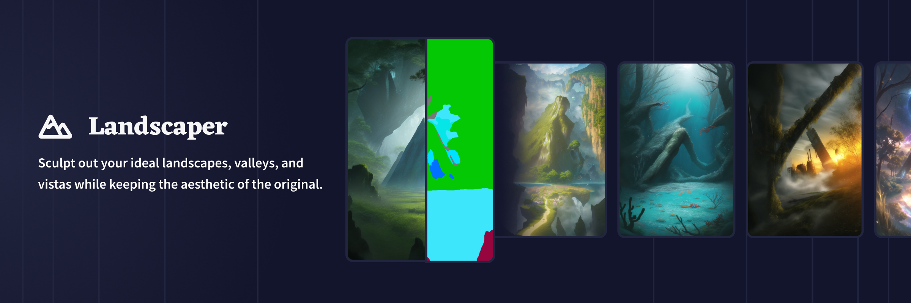

Image2Image & Control Tools
Control Tools require a base image to work off of: Drag and Drop an Image, use the Upload Image function - alternatively select the Use As Base Image button on a generated image as Base Image to get started!
Image2Image
When you hit Upload Image, you have the option to provide the AI an image to work off of. After selecting an image of your choice, you can customize how much your uploaded image and your written prompt will affect your next generation with the Settings to the right, or you can just hit Generate and see what happens!
小贴士： Image2Image used to be named Upload Image, it has been renamed and now it's more stable and even offers better picture quality!
Your prompt matters
If you want the subject of your uploaded image to stay the same, then providing a detailed prompt that reiterates what is visible or desired, will most likely give the best results.
Let the AI work off what your uploaded image displays by describing it in your prompt, or deviate from it!
You can use the uploaded image as a color guide or thematic starter point for a completely different type of generation: Deviate your text prompt from the uploaded content and watch the AI stick to the uploaded image, visual concept and colors while generating new concepts.
小贴士： Entering and exploring random prompt text or tags might also produce very neat results!
Strength
Strength defines how much your written prompt will affect the image and how much the AI is allowed to change the initial uploaded image. Higher Strength values allow the AI free rein to reinterpret the image you uploaded. It may help the color scheme or focal topic, depending on the precision of your prompt.
Noise
Noise can help the AI add new detail to your image. For example, if you upload an image that has no background but specify a topic in your text prompt, a higher noise ratio will allow the AI to easily add new details rather than thikning that space should be empty. Keep in mind that repeated generations with a lot of noise may start to show visual artifacts and degrade over interactions.
小贴士： You can lower both Strength and Noise down to their minimum values, this should generate a perfect copy of your image. Allowing you to use Enhance, Upscale, or other similar tools.
Steps & Prompt Guidance
You can also lower the Guidance of your generation to prevent the AI from changing up your image too much, and play around with the finer process of generations! We recommend getting a feel for things with some trial and error.
We’ve also noticed that the text prompts used on an already existing image can have different effects than on a purely text-based prompt. Try removing most of your text prompt, lowering the Strength & Noise and watch the AI just subtly change a few aspects of your image! There is a lot of new room still left to explore, and we highly encourage you to give it a try!
Edit Image
If you want to be creative, go click Edit Image right below the thumbnail of your Uploaded Image to make use of our built-in Edit Image Canvas!
Control Tools
Instead of the usual Image2Image option, you can pick from several Control Tools options to mold your generation. Most of what applies for Image2Image generation also applies for Control Tools, but each has its own functionality and some have their own extra settings.
Uploaded images are converted into Control Tool images that are designed to work with the selected tool. But you can quickly swap between using the converted or the unmodified uploaded image with the Use Original button, in case your image is already suited for the Control Tool.
小贴士： Using unconverted images that were not made for the control tools will still work. They won't always work as intended, but sometimes they might generate good results!
Palette Swap
The Palette Swap Control Tool works using the line art of the base image as literal guidelines for generating the image. Great for maintaining some more intricate details.
With the Add More Detail setting, you can adjust how the converter draws line art from the base image.
Form Lock
The Form Lock Control Tool senses the 3D shape of the base image and uses that to define the composition of the generated image. Best for defining character poses and angles, but can also work for other kinds of imagery involving perspective.
Scribbler
The Scribbler Control Tool is a simpler tool that takes the overall 2D shape of an image to use as a loose base on how the composition of the final image is going to be. Useful if you want simpler silhouettes to define the image.
Building Control
The Building Control Tool takes straight lines from the base image and arranges buildings using those. It can generate both building interiors and exteriors. Works best, of course, if your prompt is also written to generate buildings.
The Value Threshold and Dist Threshold sliders adjust how the converter determines what parts of the image are edges. Lower values on both settings will make it easier for more lines to be detected.
Landscaper

As the name implies, the Landscaper Control Tool is designed to take the shapes in the base image to form sceneries. It also needs a good prompt telling the AI what kind of scenery you want.
小贴士： Even though these last two Control Tools weren't intended to generate characters, you can still use them with prompts written to generate characters. The results can be unpredictable, but sometimes it might generate something cool!
Tool Influence
When you're using a Control Tool, this very important AI Setting appears. It lets you decide how hard you want the shape of the base image to impact how the generation is going to happen.
To put it simply, Tool Influence is the Control Tool's "strength".
If it's lower, it will only loosely follow the base image. If it's higher, there will be more focus on the shape of the base image. And If you make it too strong, it may favor the base shape more than generating what you prompt for.
小贴士： Finding a good Tool Influence value depending on what exactly you're trying to achieve is key! Lots of times when you think a Control Tool isn't working as you expected, an adjustment to this setting might just do the trick!